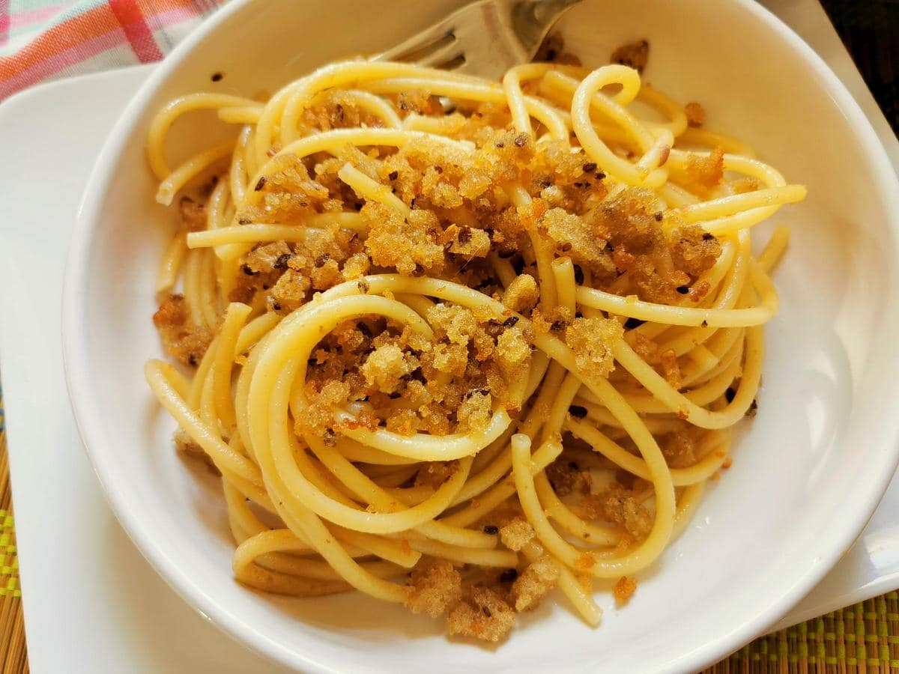

Pasta mollicata

Description
Pasta with breadcrumbs, or pasta mollicata, is a signature dish in the Southern Italian
kitchen. Also known as pasta ca' muddica or pasta ammudicata, this simple recipe originated
in Italy's cucina povera or peasant kitchen. It's a recipe invented to not only use up
stale bread but also to add flavour and bulk to what is a very simple dish.
Ingredients
- 14 oz Bucatini or spaghetti (400g)
- 2-3 slices country bread semi-stale
- 4 anchovy fillets in oil or salted (rinsed)
- 2-3 garlic cloves peeled and chopped
- 4-5 tbsp extra virgin olive oil.
- salt for pasta and to taste
- fresh parsley chopped (optional)
- 1 tsp peperoncino flakes (optional)
Steps
- Peel and chop the garlic. Rinse and chop the anchovy fillets. Break the
inside of the bread slices into small pieces.
- Blend the bread pieces in a food processor until you have rough
breadcrumbs (not too fine). Fry the breadcrumbs in heated olive
oil until they become golden and crispy. Remove the breadcrumbs
from the pan. You can add garlic while frying the breadcrumbs to
make them more garlicky.
- Put a pot of water onto boil for the pasta. Add salt once it starts
to boil and then cook the pasta al dente according to the
instructions on the packet. When the pasta is cooked, save some cooking
water and drain it.
- While the water is boiling, sauté the garlic and anchovies in a skillet
large enough to hold the pasta until the anchovies have melted. Add
the drained pasta to the skillet and mix well with the anchovies and garlic.
If it seems dry, add some pasta cooking water and mix over a low heat for a
few seconds. The starch in the cooking water will help to make the sauce creamier.
- Add some of the breadcrumbs and mix them into the pasta.
Then serve immediately sprinkled with a generous amount of more fried breadcrumbs.
Recipe by Jacqui